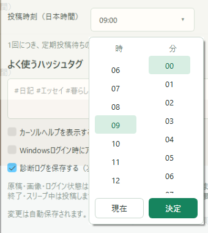

詳細説明書の目次
PC設定の全項目
時刻の選択、1〜1440分の同期、自動起動、カーソルヘルプ、診断ログ
設定画面の全項目

| 項目 | 用途・動作 |
|---|---|
| note ID | 接続・投稿する本人のID。変更すると接続確認が外れ、自動投稿が停止 |
| ブラウザー | 自動／Google Chrome／Microsoft Edge／Chromium。変更後は接続を確認し直す |
| noteのログイン方法 | メールアドレス・パスワード／Google |
| 記事一覧の自動同期間隔 | 1〜1440分。初期値60分。本文の全件取得の間隔ではない |
| ログイン・接続確認 | 専用ブラウザーでログイン主体と接続を確認 |
| 定期投稿の曜日 | 月〜日から1つ以上選ぶ |
| 投稿時刻（日本時間） | 定期投稿の共通時刻。時・分パネルまたは数字入力 |
| よく使うハッシュタグ | 記事へ追加するときの候補。記事ごとのタグは別 |
| カーソルヘルプを表示する | マウス付近の操作説明を表示・非表示 |
| Windowsログイン時にアプリを起動する | Windowsにログインした後、アプリを起動 |
| 診断ログを保存する | 診断ログの書き込みを切り替える。次回アプリ起動で前回分を初期化 |
自動保存・保存に失敗したとき
設定の変更は項目ごとに自動保存します。数値の入力途中は、入力確定やフォーカス移動後に反映される場合があります。閉じる前に下部の「変更を自動保存しました」または失敗理由を確認してください。
1つの項目が保存できなくても、他の独立した項目の変更結果は別に扱います。失敗表示がある場合は、その項目を直して再設定します。「閉じる」はすべての保存エラーを無視して成功にする操作ではありません。
記事一覧の自動同期間隔
単位は分で、1〜1440分です。直接数字を入力するか、上下のボタンで増減できます。初期値は60分です。
この設定は記事一覧を更新する間隔です。記事ごとの本文・公開条件の全件取得を有効にする設定ではありません。すぐ一覧を更新するときはメイン画面の「noteの全記事を同期」を押します。
時刻パネルの操作とキャンセル


時刻欄、または右端の矢印を押します。左は00〜23時、右は00〜59分で、それぞれスクロールして選べます。「決定」で反映し、「現在」はその時点の時・分を選びます。
Escキーやパネルの外側で閉じると選択途中の値を反映しません。F4キーでパネルを開けます。時・分の一覧では上下キーで移動、左右キーで列を切り替え、Enterで決定できます。
この時刻は定期投稿の共通時刻です。記事ごとの日時指定予約は、記事右側の「投稿日時」で変更します。
Windowsログイン時の起動と、自動投稿の状態
自動起動はWindowsへログインした後にアプリを開く設定です。PCの電源を入れる、スリープを解除する、Windowsへ自動ログインする機能ではありません。
通常起動時、noteの接続確認が保存されている場合は、自動投稿が開始される動作です。前回停止したままのつもりでも、起動後の状態を必ず確認してください。接続確認が外れていれば停止状態になります。
止めたままにしたい作業では、起動直後の「自動投稿」の表示を確認して停止してください。PC停止・スリープ中の投稿を、自動起動のチェックだけで補うことはできません。
診断ログとカーソルヘルプ
診断ログをオフにすると診断用の書き込みを止めます。記事・予約・操作履歴を削除する操作ではありません。オンのログはdata/logsで確認できますが、アプリ本体の次回起動時に前回分を初期化します。調査用に残すなら再起動前にコピーします。
カーソルヘルプはマウス付近に出る短い説明です。邪魔な場合はこのチェックだけを外せます。ボタン自体の機能や記事データは変わりません。